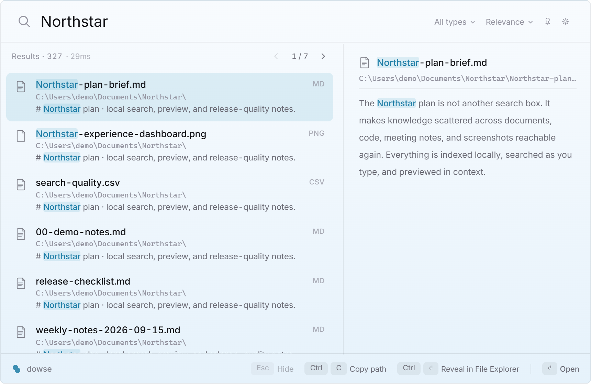

Local file content search, not just file names
Dowse extracts and indexes text from plain-text files, Markdown, source code, PDF, DOCX, XLSX, and PPTX. On Windows it also uses the built-in Windows.Media.Ocr engine to make text inside PNG, JPG, WebP, and BMP images searchable. Everything happens on your computer: there is no cloud parser and no telemetry.
The search engine uses tantivy for a persistent inverted index and BM25 ranking. Chinese text is tokenized with jieba instead of being treated as arbitrary trigrams, and older GBK-encoded text files are detected before indexing.
Summon it with a hotkey
Press Alt+` to open the acrylic search overlay, type a phrase, use the arrow keys to select a result, and press Enter to open it. Results include highlighted snippets and a live preview pane. Filters cover document, code, and image groups; results can be sorted by relevance, modification time, or size.

How Dowse differs from other Windows search tools
| Tool | Primary approach | Best fit |
|---|---|---|
| Dowse | Persistent file-name and content index, plus image OCR | Frequent searches across documents, code, Chinese text, and screenshots |
| Everything | Exceptional file-name index; content queries scan files on demand | Instant file-name lookup and occasional scoped content searches |
| Windows Search | Built-in index using configured locations and content filters | No third-party install and standard Windows document locations |
| dnGrep | On-demand text and regular-expression scanning | Focused directory searches, regex, and search-and-replace |
Read-only local search for AI agents
dowse mcp exposes three read-only Model Context Protocol tools: ranked full-text search, a longer preview around a hit, and index status. Claude, Cursor, and other MCP clients can search the folders you indexed without granting a remote service access to your drive.
claude mcp add --scope user dowse -- dowse mcp{
"mcpServers": {
"dowse": {
"command": "dowse",
"args": ["mcp"]
}
}
}Install Dowse
- Download the latest Windows installer from GitHub Releases.
- Choose the folders you want Dowse to index. Administrator rights are optional; they only unlock the NTFS MFT/USN fast path when available.
- Press
Alt+`and search for a phrase from inside a document or screenshot.
CLI users with Rust 1.85 or newer can install the same search engine with cargo install dowse.
Frequently asked questions
Does Dowse upload my files or search queries?
No. Parsing, indexing, OCR, and queries run locally, and the application contains no telemetry. The local index should still be protected like the source files because it contains extracted text.
Can Dowse search scanned PDF files?
Dowse extracts the existing text layer from PDF files. Its current OCR pipeline indexes image files; it does not yet turn the pages of an image-only scanned PDF into searchable text.
Does Dowse require administrator privileges?
No. Normal indexing and search work as a regular user. Administrator access is an optional condition for the faster NTFS MFT and USN Journal path.
Is Dowse open source?
Yes. The desktop app, CLI, search library, and MCP server are available under MIT or Apache-2.0 licenses.